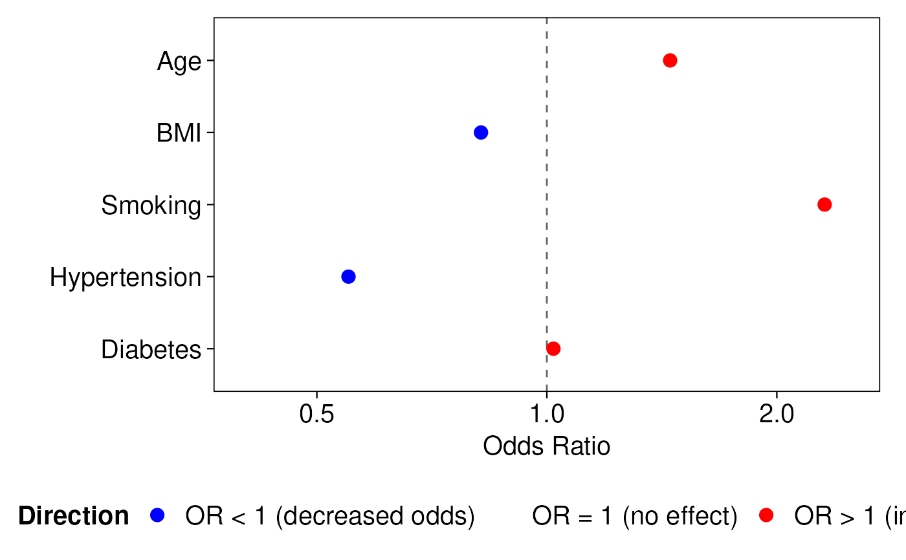
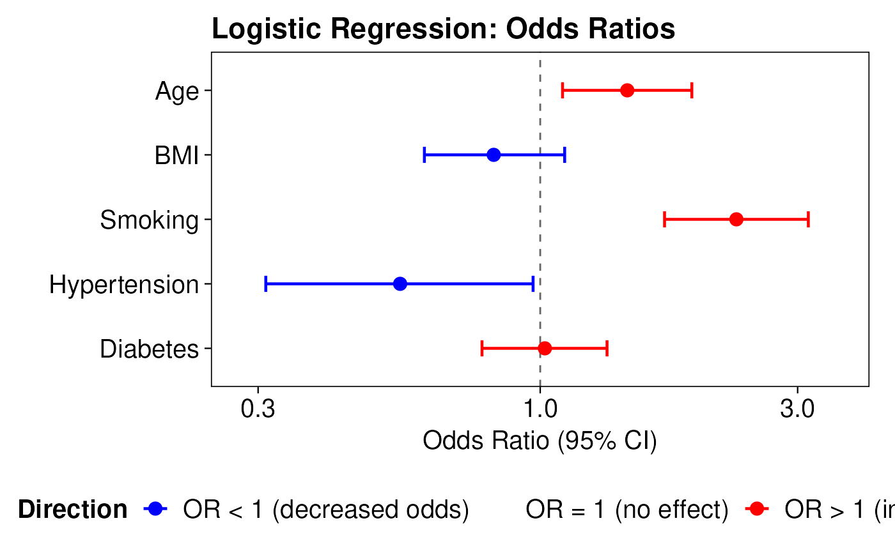
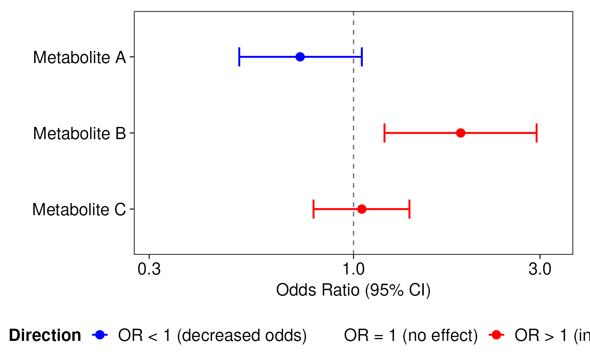
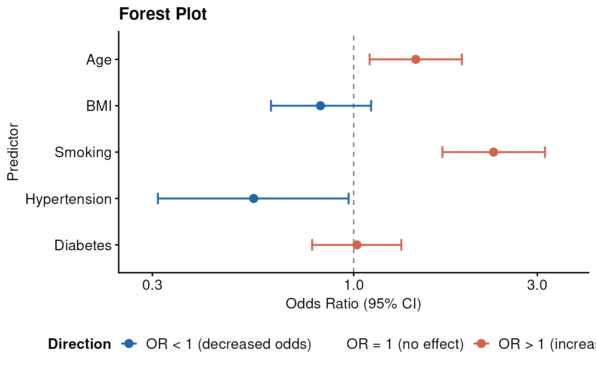

Plot Odds Ratios
plot_oddsratio.RdCreates a publication-ready odds ratio (forest) plot from a data frame containing odds ratios and optional confidence interval bounds. Points are colored according to whether the odds ratio is below, equal to, or above 1 (the null value). A vertical reference line is drawn at OR = 1. When confidence interval columns are supplied, horizontal error bars are added.
The function accepts data frames, matrices, and tibbles, and safely handles column names containing special characters (spaces, hyphens, parentheses, etc.).
Usage
plot_oddsratio(
x,
or,
low = NULL,
high = NULL,
ci = 95,
feature_col = NULL,
colors = c("blue", "grey", "red"),
dot_size = 3,
line_size = 0.8,
theme = "nature",
global_font_size = 15,
plot_title = NULL,
plot_subtitle = NULL,
x_label = NULL,
y_label = NULL,
font_family = "Helvetica"
)Arguments
- x
A data frame, matrix, or tibble containing at minimum a column of odds ratios. Column names with special characters are supported.
- or
A single character string giving the name of the numeric column in
xthat contains the odds ratios. Required. Values must be strictly positive (> 0).- low
Optional. A single character string giving the name of the numeric column in
xthat contains the lower confidence interval bound (e.g., lower 95% CI). Must be supplied together withhigh; supplying only one oflow/highraises an error.- high
Optional. A single character string giving the name of the numeric column in
xthat contains the upper confidence interval bound (e.g., upper 95% CI). Must be supplied together withlow; supplying only one oflow/highraises an error.- ci
Numeric scalar (default
95). The confidence level expressed as a percentage (e.g.,95,99). Used only in axis and legend labels — it does not compute any CI values.- feature_col
Optional. A single character string giving the name of the column in
xto use as feature/row labels on the y-axis. IfNULL(default), row names ofxare used; ifxhas no row names, sequential integers are used instead.- colors
A character vector of length 3 specifying the colors for odds ratios that are (1) less than 1, (2) equal to 1, and (3) greater than 1, respectively. Defaults to
c("blue", "grey", "red").- dot_size
Numeric scalar. Size of the point (dot) for each odds ratio. Defaults to
3.- line_size
Numeric scalar. Line width of the confidence interval error bars. Only used when both
lowandhighare supplied. Defaults to0.8.- theme
Character string specifying the ggplot2 theme. One of
"nature"(default),"bw","classic","minimal","gray", or"dark".- global_font_size
Numeric scalar. Base font size (in pt) applied to all text elements in the plot (axis text, axis titles, plot title, subtitle, caption, legend). Defaults to
15.- plot_title
Character string. Main title of the plot. Defaults to
NULL(no title).- plot_subtitle
Character string. Subtitle of the plot. Defaults to
NULL(no subtitle).- x_label
Character string. Label for the x-axis. When
NULL(default), the label is auto-generated as"Odds Ratio"(when no CI columns are given) or"Odds Ratio (95% CI)"(or the corresponding percentage fromci).- y_label
Character string. Label for the y-axis. Defaults to
NULL(no label).- font_family
Character string. Font family for all text elements. Defaults to
"Helvetica".
Value
A ggplot2 object that can be further customized, saved with
ggsave, or passed to save_plots().
Details
Color logic
Each odds ratio point is colored by comparing its value to 1:
OR < 1 → first color in
colors(default"blue")OR = 1 → second color in
colors(default"grey")OR > 1 → third color in
colors(default"red")
A small numerical tolerance (.Machine$double.eps^0.5) is applied when
testing for exact equality to 1.
Axis centering
The x-axis is expanded symmetrically around 1 on the log scale to ensure that 1 always sits at the visual center of the plot. This makes it immediately clear whether each OR falls in the "decreased odds" or "increased odds" half of the panel.
Missing CI values
Individual rows where low and/or high are NA will have
their error bars silently omitted; the OR dot is still plotted.
Examples
# ── Basic usage: OR only ─────────────────────────────────────────────────────
df_basic <- data.frame(
feature = c("Age", "BMI", "Smoking", "Hypertension", "Diabetes"),
OR = c(1.45, 0.82, 2.31, 0.55, 1.02),
stringsAsFactors = FALSE
)
rownames(df_basic) <- df_basic$feature
plot_oddsratio(x = df_basic, or = "OR")

# ── With confidence intervals ────────────────────────────────────────────────
df_ci <- data.frame(
feature = c("Age", "BMI", "Smoking", "Hypertension", "Diabetes"),
OR = c(1.45, 0.82, 2.31, 0.55, 1.02),
Lower95 = c(1.10, 0.61, 1.70, 0.31, 0.78),
Upper95 = c(1.91, 1.11, 3.14, 0.97, 1.33),
stringsAsFactors = FALSE
)
plot_oddsratio(
x = df_ci,
or = "OR",
low = "Lower95",
high = "Upper95",
ci = 95,
feature_col = "feature",
plot_title = "Logistic Regression: Odds Ratios"
)
#> `height` was translated to `width`.

# ── Special-character column names ───────────────────────────────────────────
df_special <- data.frame(
check.names = FALSE,
"OR (adjusted)" = c(0.73, 1.88, 1.05),
"Lower 95% CI" = c(0.51, 1.20, 0.79),
"Upper 95% CI" = c(1.05, 2.94, 1.39)
)
rownames(df_special) <- c("Metabolite A", "Metabolite B", "Metabolite C")
plot_oddsratio(
x = df_special,
or = "OR (adjusted)",
low = "Lower 95% CI",
high = "Upper 95% CI"
)
#> `height` was translated to `width`.

# ── Custom colors and theme ──────────────────────────────────────────────────
plot_oddsratio(
x = df_ci,
or = "OR",
low = "Lower95",
high = "Upper95",
feature_col = "feature",
colors = c("#2166AC", "#878787", "#D6604D"),
theme = "classic",
global_font_size = 13,
plot_title = "Forest Plot",
x_label = "Odds Ratio (95% CI)",
y_label = "Predictor"
)
#> `height` was translated to `width`.
